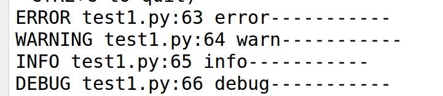

日志记录
- 有时候你会处于一种你处理的数据应该是正确的，然而实际上并不正确的状况。比如你可能有一些客户端代码， 代码向服务器发送一个 HTTP 请求但是显然它是畸形的。这可能是由于用户篡改数据，或客户端代码失败。 大部分时候针对这一情况返回 400 Bad Request 就可以了，但是有时候不行因为代码必须继续工作。
- 你可能想要记录发生什么不正常事情。这时候日志就派上用处。从 Flask 0.3 开始日志记录是预先配置好的
- 官方日志文档
- 对日志进行配置如下：
BASE_DIR=os.path.dirname(os.path.abspath(__file__))
import logging
from logging.handlers import RotatingFileHandler
# 设置日志的记录等级
logging.basicConfig(level=logging.DEBUG) # 调试debug级
log_dir=os.path.join(BASE_DIR,"logs/t1.log")
# 创建日志记录器，指明日志保存的路径、每个日志文件的最大大小、保存的日志文件个数上限
file_log_handler = RotatingFileHandler(log_dir, maxBytes=1024*1024*100, backupCount=10)
# 创建日志记录的格式：日志等级、输入日志信息的文件名、行数、日志信息
formatter = logging.Formatter('%(levelname)s %(filename)s:%(lineno)d %(message)s')
# 为刚创建的日志记录器设置日志记录格式
file_log_handler.setFormatter(formatter)
# 为全局的日志工具对象添加日记录器
logging.getLogger().addHandler(file_log_handler)
- 在首页hello_world视图中添加如下代码
logging.error("error-----------") # 错误级别
logging.warn("warn-----------") # 警告级别
logging.info("info-----------") # 消息提示级别
logging.debug('debug-----------') # 调试级别
- 启动服务器，访问首页，在上面创建的日志文件中，可以看到对应的日志信息
